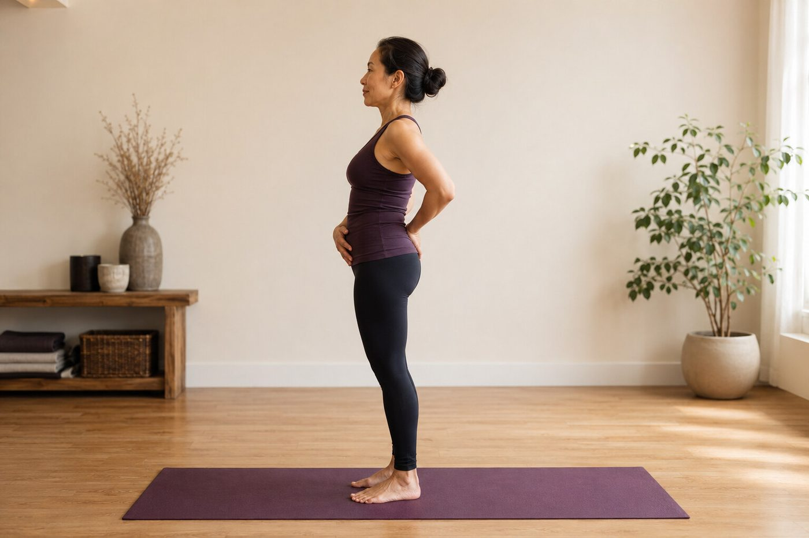

打噴嚏、大笑會漏尿，先記什麼、什麼時候就醫？

朋友講了個笑話，你笑出來的同時突然想找洗手間。這件事可能不好開口，但只要能說出什麼時候發生，就已經可以開始和醫療專業人員討論。
咳嗽或大笑時漏尿，可能和腹部壓力變化時尿液控制有關。先記下發生時的動作、頻率和對生活的影響，帶去與醫療專業人員討論。單靠漏尿或站姿，無法判斷骨盆底是緊還是弱，也無法決定該做哪種訓練。若同時新出現背痛與大小便控制改變等警訊，應立即求助。
咳嗽或大笑時漏尿，可以先記哪些線索？
可以記下是咳嗽、大笑、活動時發生，還是先有強烈尿意，及它是否影響出門、運動或睡眠。若以為漏尿代表骨盆歪，可先看骨盆前傾與外觀能說明什麼，但漏尿本身需要在醫療脈絡中評估。
👆 手機版可左右滑動
| 發生情境 | 帶什麼紀錄去詢問 | 應留意的界線 |
|---|---|---|
| 咳嗽、大笑時漏尿 | 當時的活動、頻率及影響。 | 不要憑感受認定骨盆底緊弱。 |
| 有強烈尿意或其他排尿困擾 | 記下尿意與漏尿何者先發生。 | 向醫療專業人員說明整體症狀。 |
| 背痛伴隨新出現的大小便控制改變或會陰麻木 | 向急診醫療人員說明何時開始。 | 立即求助。 |
什麼情況需要及早找醫療專業人員？
出現漏尿就可以和醫療專業人員討論，不必等到情況變嚴重。記錄頻率與生活影響，比自行分型有用。NIDDK 尿失禁資訊。
常見問題
只漏幾滴也值得問嗎？
可以。只要你注意到漏尿，就可以把發生情境和影響帶去討論。
要自己先加練凱格爾嗎？
先由醫療專業人員評估。單靠漏尿無法決定要怎麼練。
體態掃描能判斷漏尿成因嗎？
不能。掃描只用來整理一般活動與姿勢感受，與排尿症狀須分開處理。
先記下最有感的日常時刻
如果你另有想記錄的一般坐姿、站姿或日常動作感受，可以使用免費掃描。漏尿請優先找醫療專業人員。
約 2 分鐘，免登入、免加 LINE。做完可用 3 天觀察卡整理日常感受。
開始免費 2 分鐘體態訊號掃描 →延伸閱讀 看站姿角度與外觀的觀察界線